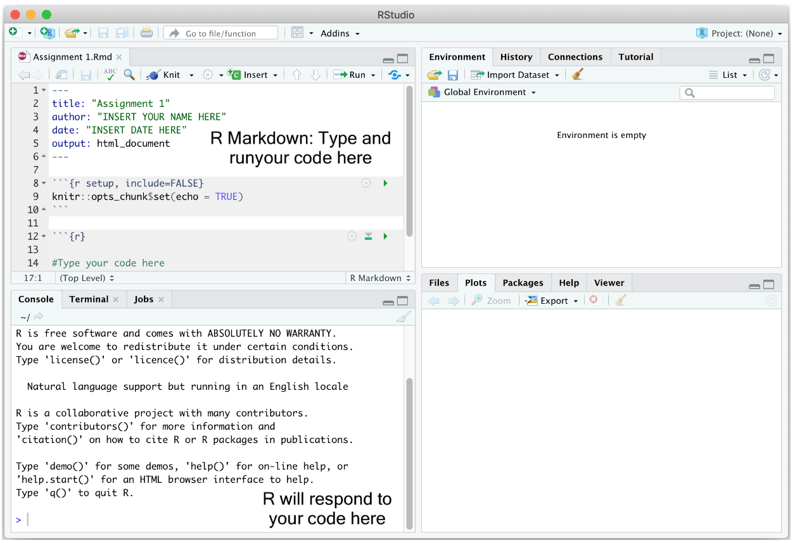
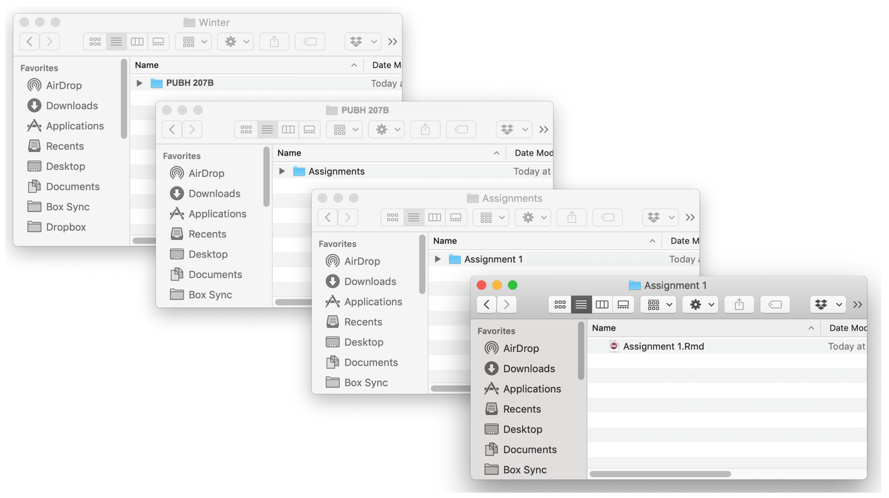
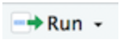
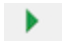
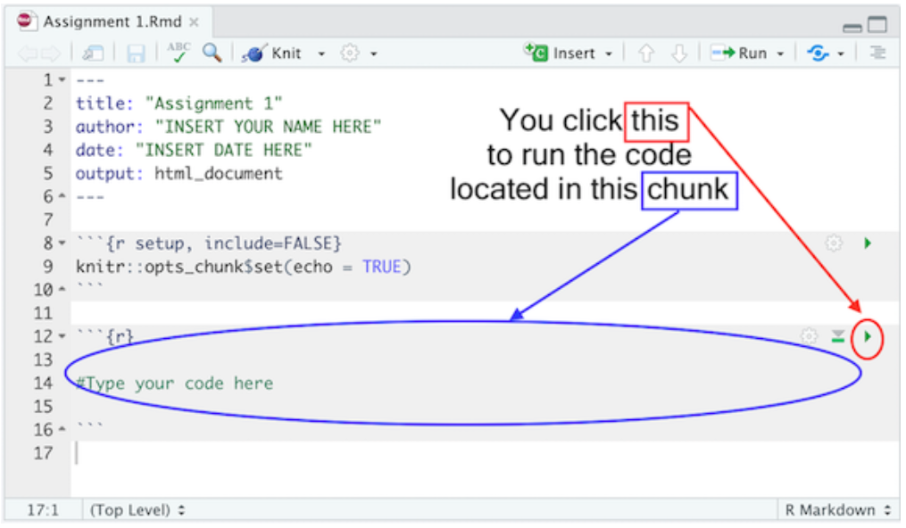
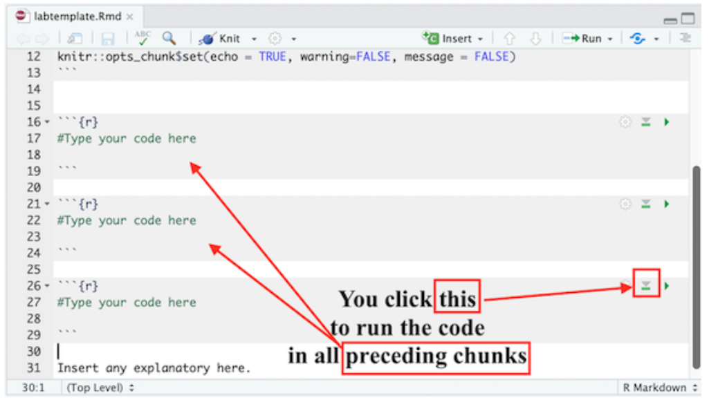
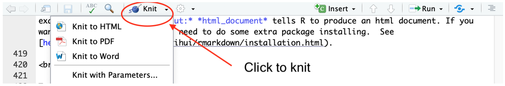
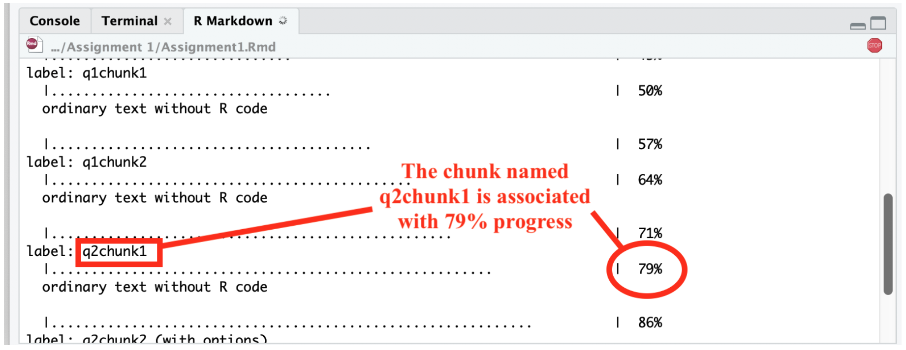
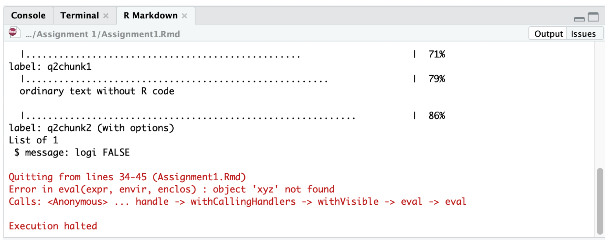
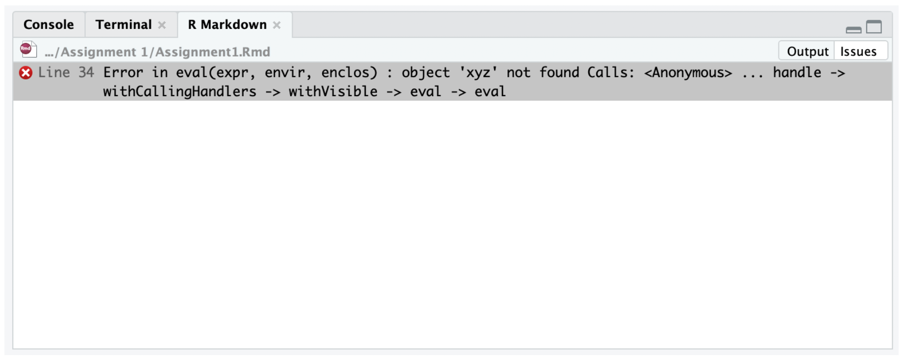

Jenny Wagner, PhD, MPH
Department of
Public Health
California State University, Sacramento
There are a few types of assignments in this course: Labs, Application Challenges, and the Final Project. For each of these assignments, you will use R/RStudio to carry out analytic tasks. A few things to know for now:
As you begin working in RStudio, you’ll encounter different file types for writing and running R code. Two of the most common are:
.R):.Rmd):In this course, we will use R Markdown files for all assignments. This ensures that you not only practice coding but also develop skills in documenting and communicating your analyses clearly.
As discussed on the Home page, R is a programming language designed for statistical computing and graphics, while RStudio provides a user-friendly interface for working with R. You need to have both programs installed; however, we will only use the RStudio application to complete assignments in this course. You will not actually need to open the R application at any time.
When you open RStudio, you’ll see the interface is divided into four main windows (see image below):
.R or .Rmd file, it
is the content in your Editor window that is being saved for later
use.The RStudio Interface
As we will be using R Markdown documents (with a .Rmd
extension) for all assignments, it is important for you to have a basic
understanding of these files before we begin working with RStudio. This
section provides a brief introduction to R Markdown, including how to
create and save an Rmd document within RStudio, the major components of
an Rmd document (YAML header, R code chunks, and text), and how to
“knit” an Rmd document (in other words, how to go from an Rmd document
to a nicely formatted report).
Once again, we will use R Markdown files for all assignments. To
create a new .Rmd file in RStudio, select File -> New
File -> R Markdown. A window should pop up. Type in “Lab 1” (or
whatever assignment you are working on) next to Title and your name next
to Author. Leave everything else alone and click OK. A new window in the
top left of your RStudio console should pop up containing your new R
Markdown file (see example below).

You will notice that your new R Markdown file already has some
“stuff” in it. R Markdown essentially provides some basic instructions
for using an R Markdown file, but we don’t necessarily need to include
that in our assignments. Before you get started on the
assignment, you can go ahead and delete everything below the “r setup”
chunk. (“Chunks” are the sections you’ll see shaded in light
gray; more info below). In other words, leave the chunk that starts with
“{r setup, include = FALSE}” and delete everything below it. Then, you
will actually have a clean .Rmd file to work from.
If you are using your personal computer for this course, it’s best to set up a clean and efficient file management structure. File management is key to preventing R programming frustration. Here are some tips:

Using the basic organizational guidelines above, save your R Markdown file into an appropriate folder by clicking on File and then Save from the RStudio menu.
To open a .Rmd file in RStudio, select File -> Open
File and navigate to the folder where you saved the assignment template
and select the file. You should see the R Markdown file pop up on the
top left portion of your RStudio interface (Editor window).
R Markdown documents contain 3 major components:
The YAML header controls how R Markdown renders your
.Rmd file. The YAML header is surrounded by - - - marks and
is always located at the top of your Rmd file.
In the assignment’s YAML, add your name, assignment number, and the date. These are the only necessary items, but you can change other options, most of which are detailed here. Your YAML will generally look like the following:
---
title: "Assignment X"
subtitle: PUBH 207B
author: Your full name here
date: Assignment due date
output: html_document
---When answering an assignment question, you’ll have the following sequence of components in your R Markdown document: Question, R code answering the question, comments describing what the code is doing, and your text to explain the results. For example, let’s say you have the following question in one of your assignments:
Question 1
1+1
1. What is the result of the operation above? Assignments will ask you to write R code to accomplish data analysis
tasks. You will present and execute your R code inside R code chunks
(yes, they are really called “chunks”). R code chunks start with
```{r} and end with ```, and you insert your R
code in between. Using the example question above, to carry out the
operation 1+1 as R code, it will look like the following in
your R Markdown document:
All code inside a chunk will be executed when knitting the R Markdown file (more on knitting soon). This means that your R code must reside inside an R code chunk in order for it to be processed as R code. R will interpret anything outside of R code chunks as plain text.
I will ask you to annotate your R code so that I (and you) know what is being done in that line of code. You designate annotations or comments in R code using the # symbol. In programming, comments are bits of text that are not interpreted as computer instructions — they aren’t code, they’re just notes about the code. Since computer code can be opaque and difficult to understand, we use comments to help write down the meaning and purpose of our code. While a computer is able to understand the code, comments are there to help people understand it. This is particularly important when someone else will be looking at your work — whether that person is a collaborator, or is simply a future version of you (e.g., when you need to come back and fix something and so need to remember what you were thinking when you first wrote the code).
Comments should be clear, concise, and helpful—they should provide
information that is not otherwise present or “obvious” in the code
itself. So, to annotate the above line of code 1+1, you
could add in your R code chunk:
You put your comments after the #. When the # symbol is
in front of text within a code chunk, R knows that what follows
is not code but rather is plain text being used to explain the code.
The first line of an R code chunk has {r}. Next to the r, we can give the chunk a name, such as:
Here, I named the chunk “q1chunk1” which indicates this is question 1, chunk 1. You can name the chunk whatever you like. The chunk name is not required; however, it is good practice to give each chunk a unique name (we’ll see its value later when we talk about knitting).
In the R Markdown document you created and saved, you will notice the following R code chunk has automatically been included after the YAML header:
The above code establishes global options for every R code chunk in your R Markdown file. These options alter the way R results are spit out in your final formatted document. I suggest adding the following global options in every R Markdown assignment file:
The above code hides non-error messages for every single R code chunk in your file. These non-error messages are unnecessary for the purposes of this class. Other chunk options can be found here.
You can also set options for individual chunks. These are local
options - local to that chunk - and won’t be applied to other chunks in
your file. For example, you can add the options
warning=TRUE and message=TRUE to an individual
R code chunk as follows if you want to show the messages for the R code
in that particular chunk. Notice that each argument is separated by a
comma:
In addition to R code, assignments will ask you to write text to explain your results. Going back to our example question from above:
Question 1
1+1
1. What is the result of the operation above? You would type in your R Markdown document something like:
The question and text explaining the result reside outside of the R code chunk. There is nothing special about the text in terms of its format or placement.
Please do not put all of your code for an entire assignment or even a single question in one single chunk. For example, let’s say you see the following question in an assignment:
Question 1
(a) 1+1
(b) 2+2
Run each line of code above. What are the results? Instead of including both lines of code in one chunk like as follows…
Question 1
```{r}
# this code adds one plus one
1 + 1
# this code adds two plus two
2 + 2
```
One plus one equals 2. Two plus two equals 4.…break it up and add text after each to explain the result:
You may have multiple code chunks for a single item. It just depends on how complex the question is - there may be multiple steps involved. Use your best judgement to determine the most appropriate way to break up your code, keeping in mind that there are always many different ways to accomplish the same task in R.
After you write code in a chunk, you’ll need to test the code to make sure it is running properly. In other words, rather than writing all the code and then running it at the end of the assignment, run the chunks one at a time. To elaborate, let’s say the first question in an assignment asks you to add one plus one. In your R Markdown document, type in the following to answer this question:
Run that code chunk to make sure it works (you should get 2!). Then proceed to the next question. Let me emphasize: Do not write all of your code answering every question in the assignment and run it at the very end. Routinely TEST, Test, and test your code to make sure it runs properly.
There are a number of ways to run code in R Markdown. First, you can click your mouse in the R code chunk you want to run and click on  located at the top of the R Markdown window and select Run Current Chunk.
Second, you can place your mouse cursor in the R code chunk and click on  located on the right corner of the chunk. See Figure below.

In each R code chunk, pressing the button will run all previous R chunks. See Figure below.

Knitting puts an assignment’s main components - code,
output, and text - in a nicely formatted document. You can create three
types of knitted documents: html, Microsoft Word, or PDF. For all
assignments in this course I would like you to knit to an
html file because it is the easiest of the three
options.
To Knit your document click , which will be located at the top of the upper left R Markdown window.

When you start knitting, you will notice that a new window on the bottom left will appear in place of the Console. The window will show the progress in your knitting. When you knit, R is going through each R code chunk one at a time. The percentages you will see are based on the proportion of your R Markdown file that R has successfully knitted. See Figure below.

If there is a problem knitting, R will stop at the chunk that contains the problem. You can determine the offending place in your R Markdown file two ways. First, in the R Markdown tab in the bottom left window, if you click on “Output” located at the top right corner of this window, you will see the R Markdown progress window, the error in red, and where R Markdown stopped. Carefully read the description of the error, which will contain the R code chunk name and sometimes the lines containing the problem in your R Markdown file. While not required, this is where naming your code chunks can come in handy. You can go to your offending chunk and see what may be the problem. For example, the figure below shows knitting was stopped because the object ‘xyz’ was not created in the R Markdown file. You can go to the chunk named q2chunk2 to remedy the issue.

The other way to find where R Markdown is having trouble is by clicking on “Issues” also located at the top right corner of the R Markdown window. The error will give you something similar to what you found in the Output window, but instead of a chunk, it will tell you the specific line in your R Markdown file that this error is located. Go to that line in your R Markdown file and see what is the issue. For example, the error here is located in line 34.

If everything goes smoothly and you encounter no errors, a preview of
your knitted document will pop up in a new window and the
.html file will be saved in the folder where your R
Markdown file resides. I recommend not waiting until
the very end of an assignment to knit. When you finish one
question, knit your document to see if everything is working properly.
If it is working for that question, move on to the next question. You
can knit over and over again, and each time the knitted file in your
folder will be replaced by the newest version. So, don’t be afraid to
knit just because you aren’t finished with an assignment yet.
There are two things you’ll have to deal with: (1) making sure the R code is working correctly to get the results you need in order to answer the question; and (2) making sure the code is working correctly to knit a final document. These two issues may be related (for example, if your R code is producing an error, R Markdown will not knit), but sometimes they are not. So, check both your R code and your knitting results often. And absolutely do not wait until the last minute to knit. Knit as often as possible.
When you’re satisfied with the end product, submit your
.Rmd document and final knitted .html document
to the corresponding assignment page on Canvas.
The proper workflow for each assignment will be as follows:
.Rmd file..html file. Make sure it knits properly. If it does not,
examine the error, and fix the problem..Rmd and the knitted .html files on Canvas
by the specified deadline.For each assignment in this course, you will upload onto Canvas two documents:
.Rmd extension.html fileTogether these documents will provide an easy-to-read document to grade; more importantly, you will get to practice (1) writing scripts, (2) keeping track of the analyses you run, and (3) organizing your output in a reader-friendly manner. When you submit these documents on Canvas, please do not combine them into a zipped compressed folder. They should be two separate files.
Your grade in this course will be determined by:
Participation: For full particicpation credit, you are expected to attend and actively participate during all in-person class meetings.
Labs: Graded on completion. Once you have gone
through the Lab Guide and completed all tasks, you will submit your R
Markdown file (with a .Rmd extension) and knitted
.html file on Canvas.
Application Challenges: Like Labs, you must
submit your R Markdown file (with a .Rmd extension) and
knitted .html file on Canvas. I will not grade your
assignment without both of these files. For full credit on each item,
you must:
Final Project: You will be working in small groups for the Final Project. Assignment details and rubric will be provided on Canvas and discussed in class.
Note: While I encourage collaboration, note that Application Challenges are individual assignments. Although there may be similarities across students due to the nature of the assignments, I expect your code and written interpretations to be your own.
Working with R/RStudio can have a steep learning curve initially. Know that you are not alone on this journey - your fellow students are likely in the same boat, and I am here to support you to the best of my ability at every step of the way.
A few tips: